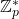
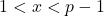
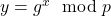
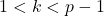
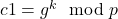
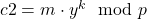
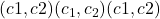
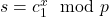
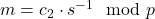
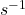

El algoritmo criptográfico ElGamal es un sistema de cifrado asimétrico que se utiliza para garantizar la seguridad y privacidad de las comunicaciones. Fue desarrollado en 1985 por Taher ElGamal y se basa en los principios de la teoría de números y en la dificultad de resolver el problema del logaritmo discreto en grupos finitos.
Características principales de ElGamal
- Cifrado asimétrico:
- Utiliza un par de claves: una clave privada (secreta) y una clave pública (compartida).
- La clave pública se usa para cifrar los mensajes y la clave privada se usa para descifrarlos.
- Problema del logaritmo discreto:
- Su seguridad se basa en la dificultad de resolver el logaritmo discreto en grupos finitos, lo que hace que descifrar los mensajes sin la clave privada sea computacionalmente inviable.
- Esquema probabilístico:
- Introduce aleatoriedad durante el proceso de cifrado, lo que significa que un mismo mensaje cifrado dos veces puede generar resultados diferentes.
- Aplicaciones:
- Se utiliza tanto para cifrado de datos como para firmas digitales, aunque para firmas digitales el algoritmo se suele derivar en esquemas como DSA (Digital Signature Algorithm).
Componentes del algoritmo
- Configuración inicial:
- Se elige un número primo grande p y un generador g de un grupo cíclico multiplicativo

. - El remitente elige una clave privada xxx (un número aleatorio tal que

). - La clave pública se calcula como

.
- Se elige un número primo grande p y un generador g de un grupo cíclico multiplicativo
- Cifrado:
- Para cifrar un mensaje mmm:
- Se convierte mmm en un número dentro del rango de
 .
. - Se elige un número aleatorio k (número efímero,

). - Se calcula

. - Se calcula

.
- Se convierte mmm en un número dentro del rango de
- El texto cifrado es el par

.
- Para cifrar un mensaje mmm:
- Descifrado:
- El destinatario usa la clave privada x para descifrar:
- Calcula

. - Calcula el mensaje original como

, donde
es el inverso modular de s.
- Calcula
- El destinatario usa la clave privada x para descifrar:
Ventajas de ElGamal
- Seguridad robusta: La seguridad se basa en problemas matemáticos bien estudiados y difíciles de resolver.
- Cifrado semántico: Gracias a la aleatoriedad introducida por k, un atacante no puede deducir el mensaje original observando textos cifrados repetidos.
- Versatilidad: Se usa tanto para cifrado como para generación de firmas digitales.
Desventajas de ElGamal
- Largo del texto cifrado: El tamaño del texto cifrado es aproximadamente el doble del texto original, lo que puede ser una desventaja en sistemas con limitaciones de almacenamiento o transmisión.
- Eficiencia: Es más lento en comparación con otros algoritmos como RSA debido a la necesidad de realizar múltiples operaciones de exponenciación modular.
- Generación de claves efímeras: La seguridad depende de generar valores k únicos y verdaderamente aleatorios; reutilizar k puede comprometer el sistema.
Comparación con otros algoritmos
- RSA: Ambos son algoritmos asimétricos, pero ElGamal depende del problema del logaritmo discreto, mientras que RSA se basa en la factorización de números enteros grandes.
- ECC (Criptografía de curva elíptica): Una variante de ElGamal se utiliza en curvas elípticas, lo que permite obtener la misma seguridad con claves más pequeñas y mayor eficiencia.